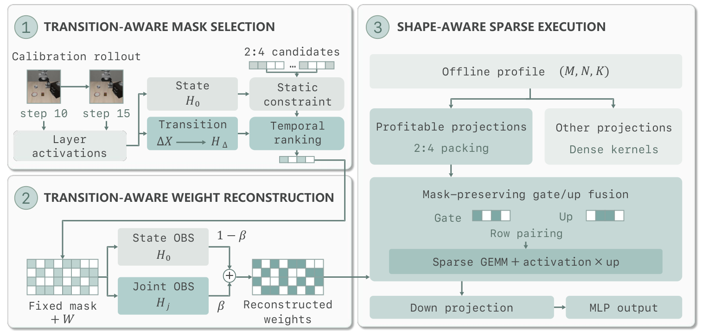

01Main paper
Phone stand
Grasp the phone, align it with the stand, and release.
VISION–LANGUAGE–ACTION MODELS · TRAINING-FREE SPARSITY
Preserve how a policy responds as a task unfolds.
Turn structured weight sparsity into practical inference gains.
Final deployment vs. Dense eager
59 / 80 successes for both policies
Two weights retained in each pruned group
Robot measurements cover the four tasks in the main paper, with 20 trials per task and method. Videos below illustrate individual task executions.
IN ACTION
FR3 manipulation demonstrations.
Grasp the phone, align it with the stand, and release.
Pick up the pen and insert it into the holder.
Combine three bowls into one stack over two transfers.
Transfer the bun from the conveyor belt to the plate.
Pick up the toast and place it on the white plate.
Transfer the chocolate from the belt to the plate.
Phone stand, pen holder, bowl stacking, and pineapple-bun transfer are evaluated quantitatively in the main paper. Toast and chocolate are additional task sequences in Appendix D.
THE METHOD
A small error at one control step can compound during a rollout. SparseVLA uses activation changes between consecutive observations as a complementary pruning signal, while constraining the error at individual steps.

Compare all six 2:4 patterns in each weight group. Use temporal information to rank candidates within a static reconstruction-cost constraint.
Blend static and joint-curvature weight reconstructions under the same mask to preserve outputs and their inter-step changes.
Route profitable projections to sparse kernels and fuse operations to reduce memory traffic and kernel-launch overhead.
EXPERIMENTS
Two VLA backbones in simulation.
Four quantitative tasks on the FR3.
| Task | Dense success | SparseVLA success | Inference speedup | Peak CUDA memory saved |
|---|---|---|---|---|
| Phone stand | 13 / 20 | 14 / 20 | 1.92× | 4.81% |
| Pen holder | 15 / 20 | 17 / 20 | 2.01× | 4.78% |
| Stack bowls | 12 / 20 | 10 / 20 | 2.07× | 4.78% |
| Pineapple bun | 19 / 20 | 18 / 20 | 1.91× | 4.77% |
| Overall | 59 / 80 | 59 / 80 | — | — |
Speedup and peak memory savings compare final post-conversion SparseVLA policies with unpruned Dense eager on matched inputs. These are deployment-level gains; they do not isolate the contribution of sparse kernels. Task-level success improves for phone and pen, and decreases for bowls and bun.
| Backbone / benchmark | Dense success | SparseVLA success | Stable CUDA allocation saved |
|---|---|---|---|
| π0.5 / LIBERO | 96.15% | 97.25% | 20.95% |
| GR00T N1.7 / SimplerEnv | 63.15% | 65.77% | 5.23% / 5.23% |
GR00T memory savings are reported for Google Robot / WidowX. Stable CUDA allocation in simulation and peak CUDA memory on the real robot are different metrics. Full baselines, matched-backend timing, and experimental protocols are in the paper.
THE PAPER
Towards Smaller and Faster Vision-Language-Action Models